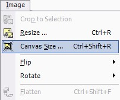
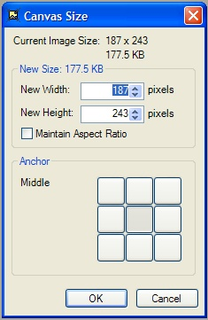

Canvas Size Operation
|  The Canvas Size Operation (Image-->Canvas Size) is a utility to alter the dimensions of all the layers in the current image. |
 The Canvas Size operates as follows: Select whether or not to maintain the aspect ratio (of the new layer dimensions, NOT the actual images), choose the Anchor of the original image (this will be elaborated upon later), and then select the new dimensions. All of the layers will reflect this new change. Below is an example of a right Anchoring. |
| |
|
| Original Image | Canvas Size Example: Notice the current image size vs. the new Size. Also, note that the image will be anchored to the right side of the new canvas. |
| |
|
| The new canvas with the original image anchored to the right side as shown in the previous graphic. | And here is an example of the original image being anchored to the upper right hand corner. |